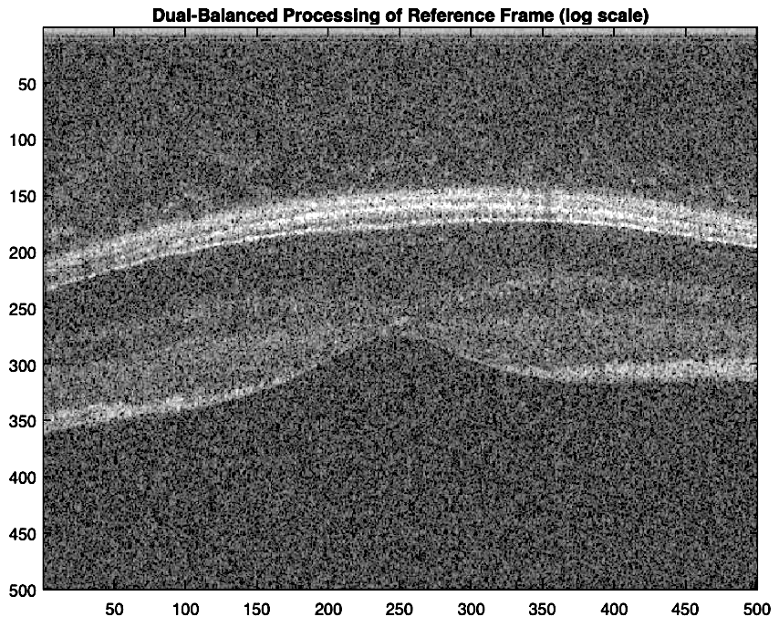
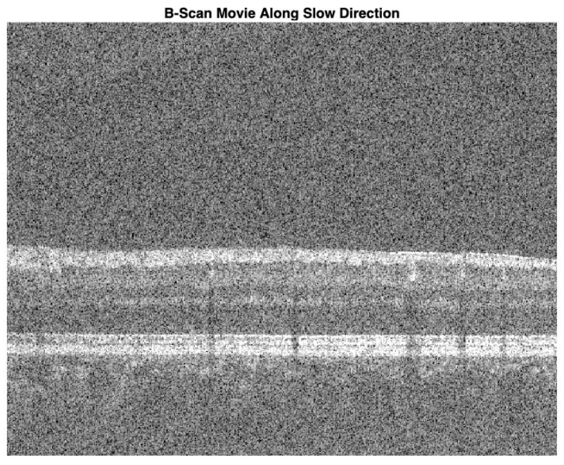
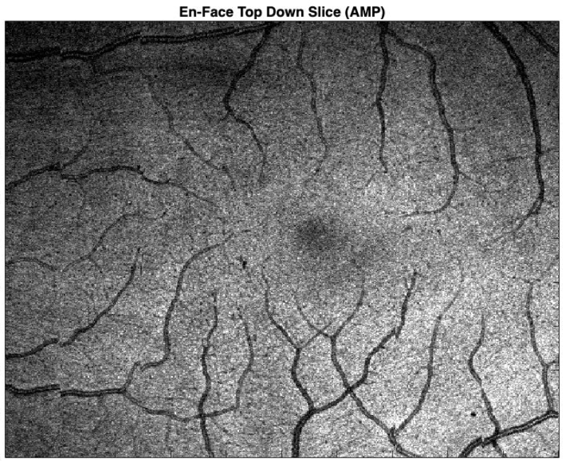

This project is the culmination of my acquired knowledge from SBME's Optical Linear Systems course and weeks of development and research. This project was presented as a term project and obtained a grade of 98% for exceeding expectations as it was a comprehensive, accurate, and generates viable retinal cross section volumes from raw OCT data obtained from VGH's Clinical Trial OCT System.
I would like to thank UBC's Professor Myeong Jin Ju, and Neuralink Engineer Andrew Chen as they have taught me a great deal about the subject of OCT image signal processing and have written many sections and functions this code relies on.
Part 1: Verifying Processing Using Reference B-Scan

First we prove the efficacy of the processing algorithm by performing the individual steps one by one and examining scan for changes at every step.
The processes used on the B-Scans are: Hilbert Transform $\rightarrow$ K-Linear Resampling $\rightarrow$ DC Fixed Pattern Noise Subtraction $\rightarrow$ Dispersion Estimation and Compensation $\rightarrow$ Hanning Windowing.
Hilbert Transform:
The Fourier transform will capture "negative" frequencies, which extend into the axis due to the periodicity of the DFT. Applying a Hilbert Transformation first allows for all the negative amplitude to be added to positive, improving the SNR.
K-Linear Resampling:
The raw data captured by OCT systems is not linearly spaced in frequency. Thus we use a look-up table (LUT) that maps nonlinear raw data to a linear frequency. Resampling mitigates the distortion and loss of resolution that would otherwise occur in the processed data due to dispersion mismatch and the broadening effect.
DC Fixed Pattern Noise Subtraction:
Removing the DC component of the raw data we see the reduction of artifacts in the image and an increased SNR.This is done by subtracting the median values of both the real and imaginary components of data. As a result, background noise, detector offsets, and other low-frequency disturbances are effectively mitigated.
Dispersion Estimation and Compensation:
The index of refraction in materials is frequency dependent meaning the velocity of light changes, leading to distortions in the signal throughout the optical path. An iterative process can be used to minimize the distortions by calculating spectral entropy, leading to clearer images.
Hanning Windowing:
A hanning window is applied to the data in order to reduce spectral leakage. An ideal FFT requires an integer number of periods in the signal, but our data does not guarantee this, causing truncated waveforms to be transformed. This shows up in the FFT as high-frequency components not present in the original signal, also known as spectral leakage. Applying a window minimizes this effect by tapering the signal at the edges of the sampling window
Part 2: Volume Generation and Correction

Now that we have proven the efficacy of the processing we move on to volume generation. The code first generates the dispersion coefficients and then iteratively constructs the volume processing each slide. After generating the volume we have to correct for axial misalignment. First we perform global axial motion correction, then we perform global axial tilt correction. This combination of corrections generate a coherent and well aligned 3D volume of which en-face scans can be generated. This processing allows us to go from raw OCT data to usable, manipulable, and diagnosis ready retinal volume model.
Part 3: Results and Examining Generated En-Face Data

Now that we have a manipulable, well aligned, and well processed volume, we can examine top down slices that run across the original B-Scan directions. This allows us to examine specific 2D planes of tissues which has proven to be invaluable to diagnoses for retinal ailments. As seen above we can isolate specific structures like the vasculature of the retina which could be critical in diagnosing microaneurysms.
The output of the code is a tiff stack that can be viewed in ImageJ using the volume viewer plugin or any other tiff stack volume viewers.
If you would like to try my algorithm out you can download the matlab source code below from my github. If you would rather view the code in PDF form you can also view the PDF below.